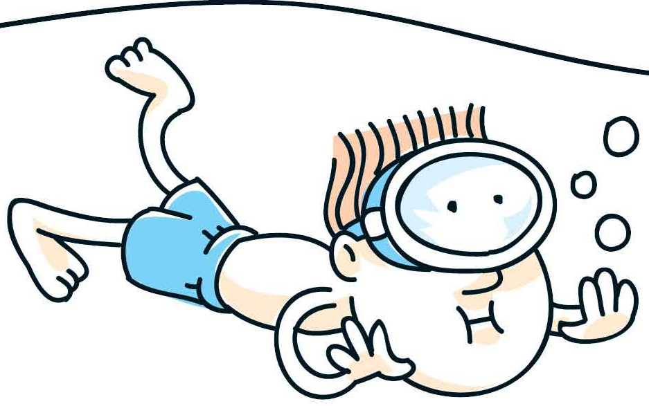

The breast stroke is a difficult swimming technique that requires a lot of body control
To be able to master this stroke you will need a lot of endurance and drive.
But with time and pratice you can become a master of this stroke. Never say you can do it.
you have to basic to do this all just because you learned how to float.
Not so difficult but still fun
This stroke is one that can be done while relaxing. i think of this as a fall back techique.
Swimming on your back is like a resting position. It doesn't require as much body control as the breast stroke does.